設計目的
這是我個人第一項完整的網頁設計專案，為大學時期製作的練習作品，當時並未訂定明確的設計方向，因此形象不明確、設計未統一、且有許多未顧及到使用者體驗。
此次找到機會把這個專案重新設計，希望將此烘焙坊 - WILL BAKERY營造為一家富有溫度、同時也具有質感的店家。因此在設計上重新思考，不再使用高對比、大色塊的表現形式，而是使用溫和色調及點畫效果的單色圖像。
設計規範
色票
#C27D31
#5D4135
#ECE3D7
#BA5029
字體
Noto Serif CJK TC
DM Serif Display
Noto Sans CJK TC
圖像元素
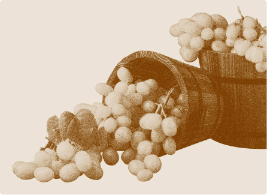
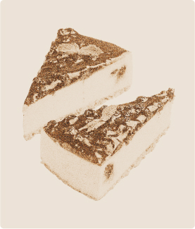
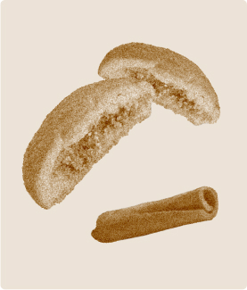
設計細節
作為烘培坊的網站，重點在於如何展示甜點、吸引消費者的注意並引起食慾。 因此在設計時決定將產品圖像最為重點，讓消費者進入網站，第一眼看到的就會是各個美味甜點的輪播。
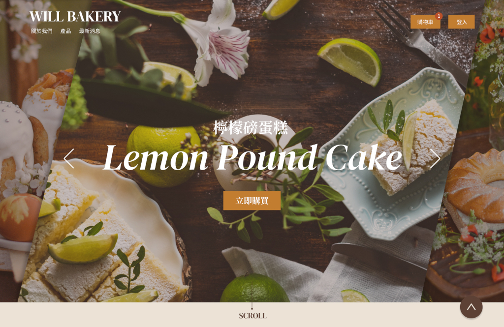在產品輪播後，首先簡單介紹該店家的資訊，讓消費者先有基礎的認識。
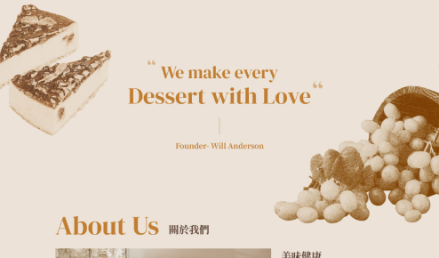
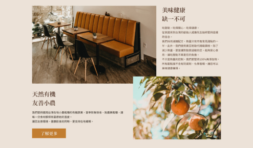
接下來便是產品及最新消息，讓消費者能快速瀏覽產品資訊、購買產品，以及獲取新品、折扣消息。
響應式網頁設計(RWD) - 手機尺寸
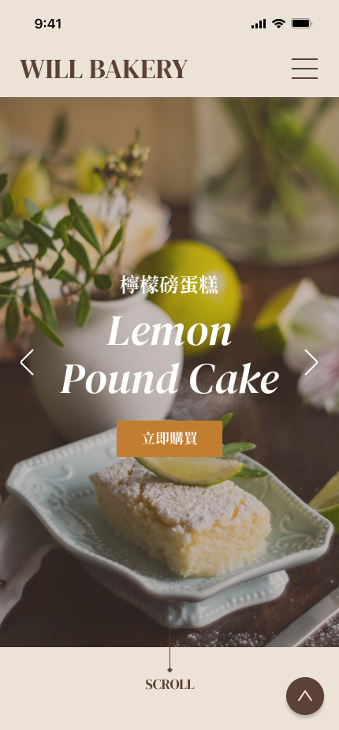
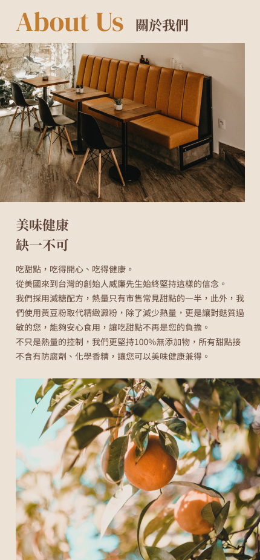
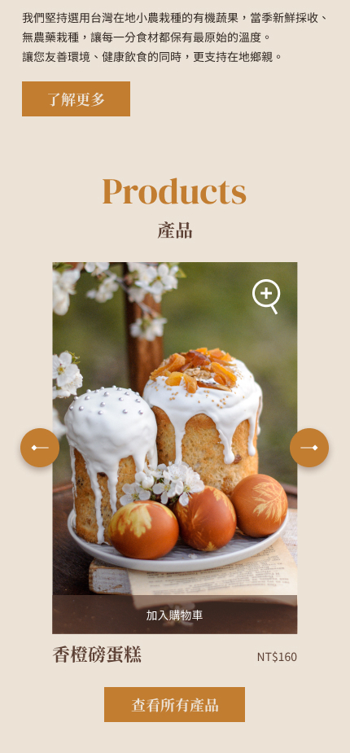
原設計
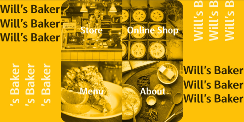
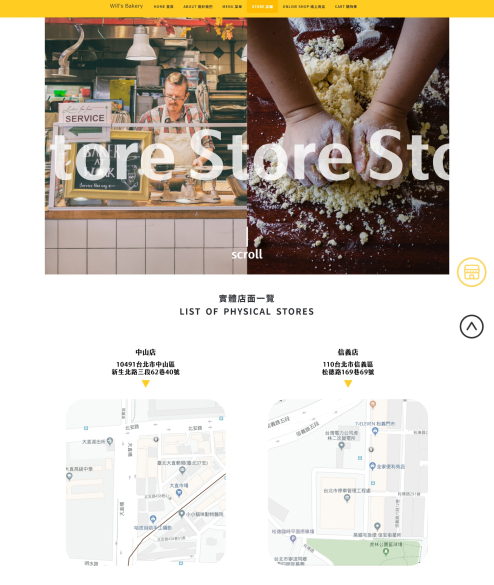
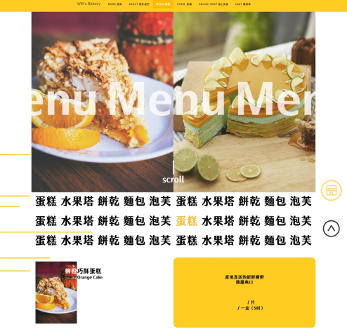
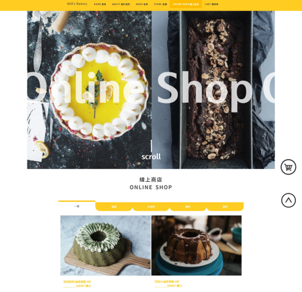
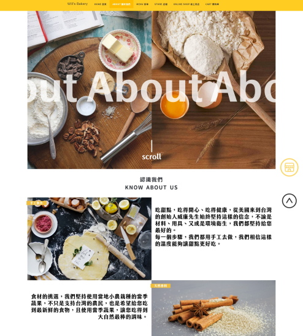